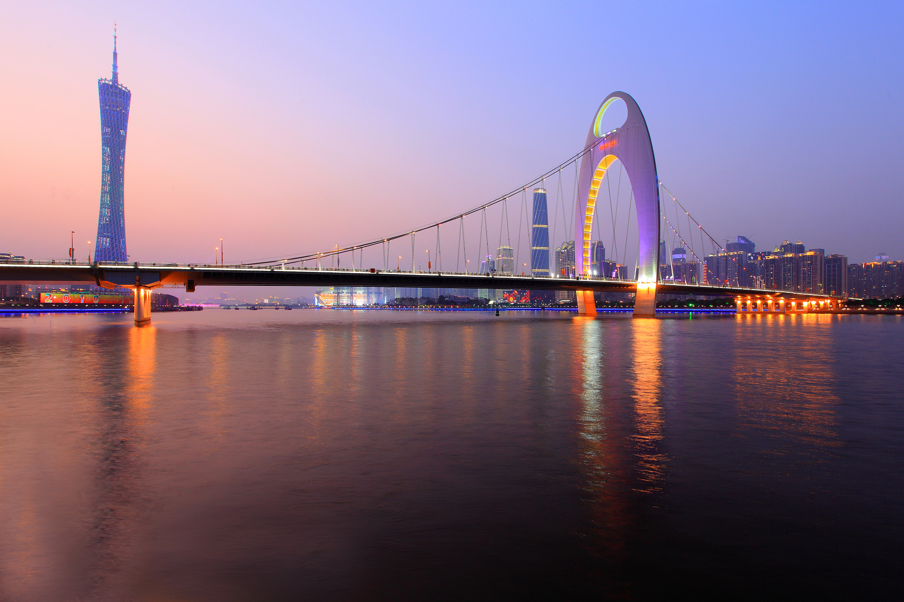
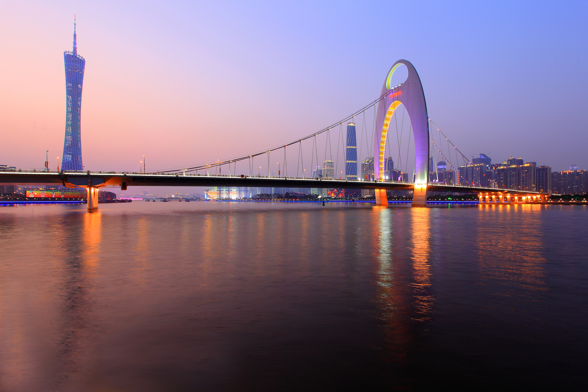
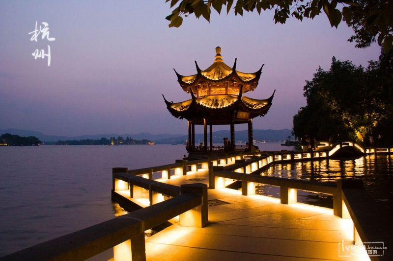
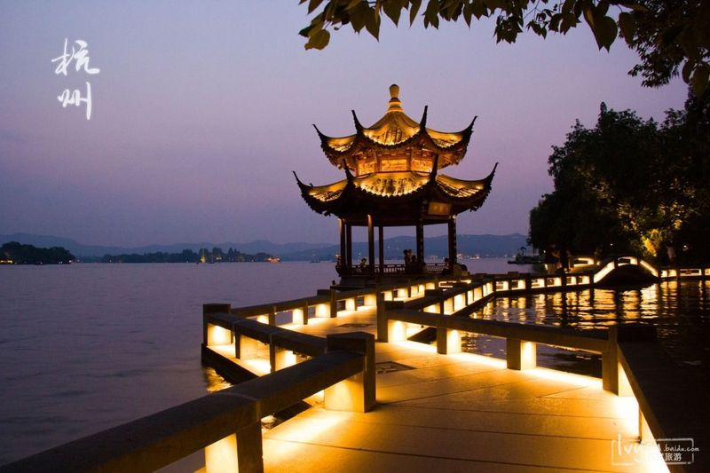
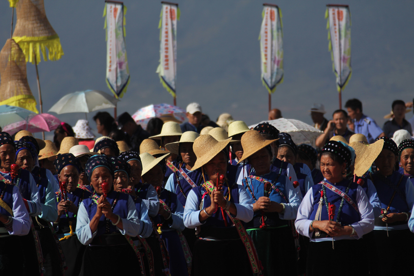
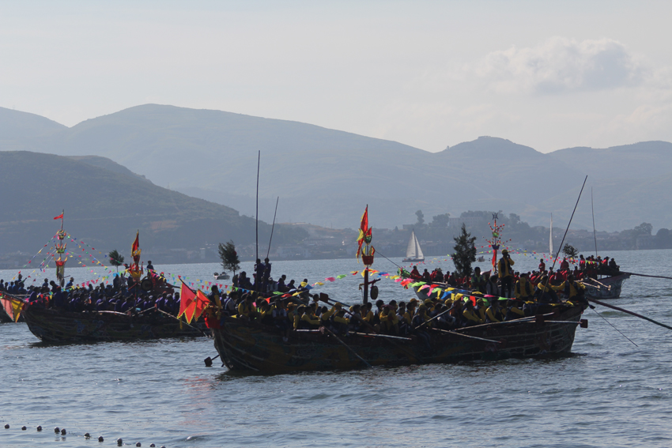

大理
大理好玩的地方有哪些？
- 广州
- 湛江
- 大理
- 杭州
- 青岛

 



 



About
大理必打卡项目——喜洲古镇
·喜洲古镇西倚苍山，东临洱海，是电影《五朵金花》的故乡。 ·有着千年历史的白族历史文化名镇，具有浓郁的民族风情和历史文化气息。
·白族民居是喜洲的一大特色，历经明清等时期，人们常去参观的即严、杨两家。 ·喜洲破酥粑粑是喜洲著名的风味小吃，色香味具佳，不妨品尝一下。
用时参考 1-3小时 交通 在大理古城或下关乘坐开往喜洲的中巴，沿滇藏公路招手即停。 门票 免费 tips: 喜洲镇免费，镇上内部景点收费。 开放时间 全天
About
大理必打卡项目—— 沙溪古镇
·沙溪曾是茶马古道上的重要驿站，随着茶马古道的衰落，这里也就渐渐被遗忘了，也更好的保留了当年茶马小镇的风貌。 ·古镇现还有古戏台、玉津桥、兴教寺等景点，其中兴教寺是我国目前保存规模最大、最典型、最有代表性的佛教密宗“阿吒力”寺院。
·另外，你还可以欣赏沙溪洞经古乐，看白族传统的霸王鞭，品尝沙溪的土特产地参子、松茸、羊乳饼等。
用时参考 1天 交通 去沙溪古镇必须先乘车到剑川县中转，在大理客运北站每天8:00-17:00每15分钟有一班车发往剑川，车程约3个半小时，车费39元；剑川县城车站门口或甸南镇有微型车到沙溪，车程约45分钟，车费15 门票 免费 tips: 景区不收门票，古镇内小景点可购买联票 开放时间 全天
About
大理必打卡项目——洱海
大理“风花雪月”四大名景之一，外形如同耳朵，是由西洱河塌陷形成的高原湖泊。 ·共有三岛、四洲、五湖、九曲，湖水清澈见底，被称作“群山间的无瑕美玉”。
沿湖的人气村落有“洱海神光”的双廊、《心花怒放》取景地的才村、以白族民居建筑为特色的喜洲。
杭州雷峰塔是西湖的标志性景观，“雷峰夕照”自古被封为西湖十景之一。游人登上雷峰新塔，站在五层的外观平座上，西湖山水美景和杭州城市繁华尽在游人的远望近看之中。极目四眺，碧波荡漾的西湖、秀美端庄的汪庄、初见轮廓的南线新景点、绿意葱笼的湖心三岛一览无余。
大理习俗
大理是全国唯一的白族自治州，是白族的主要聚居地。。
 端午节白语称“五望五”，与汉族端午节同日。白族人把端午节称为“端午”，认为“端”即是开端，通常人们会把初一作为五月开始，但是在习俗上五月初五才是五月的开始。关于白族端午节的来源，说法不一，有人说是为了纪念战国时楚国投江溺死的屈原，也有人说是来自《白蛇传》。节日一到，除了和汉族人家一样有包粽子、赛龙舟等习俗外，还有白族自己独特的端午习俗。